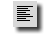
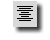
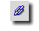
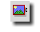
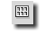

|  |
Balra igazít: A gomb megnyomásával az aktuális kurzorpozícióra a
<P ALIGN="left"></P> -t illeszti be a
Globe és a kurzort a nyitó és záró elem közé helyezi. Ezáltal egybõl balra igazítottan írhatod a szövegedet. Amennyiben további opciókat kívánsz megadni a bekezdésre vonatkozóan, menj vissza a HTML kezdõ elem > jele
elé és nyomj egy szóköz billentyût. A Globe segíteni fog neked a paraméterezésben. Errõl a funkcióról bõvebben a Segédlet menüpont alatt olvashatsz.
|
|  |
Középre igazít: A gomb megnyomásával az aktuális kurzorpozícióra a
<P ALIGN="center"></P> -t illeszti be a
Globe és a kurzort a nyitó és záró elem közé helyezi. Ezáltal egybõl középre igazítottan írhatod a szövegedet. Amennyiben további opciókat kívánsz megadni a bekezdésre vonatkozóan, menj vissza a HTML kezdõ elem > jele
elé és nyomj egy szóköz billentyût. A Globe segíteni fog neked a paraméterezésben. Errõl a funkcióról bõvebben a Segédlet menüpont alatt olvashatsz.
|
|
Jobbra igazít: A gomb megnyomásával az aktuális kurzorpozícióra a
<P ALIGN="right"></P> -t illeszti be a
Globe és a kurzort a nyitó és záró elem közé helyezi. Ezáltal egybõl jobbra igazítottan írhatod a szövegedet. Amennyiben további opciókat kívánsz megadni a bekezdésre vonatkozóan, menj vissza a HTML kezdõ elem > jele
elé és nyomj egy szóköz billentyût. A Globe segíteni fog neked a paraméterezésben. Errõl a funkcióról bõvebben a Segédlet menüpont alatt olvashatsz.
|
![[ Align Justify ]](pic/justify_button.gif) |
Sorkizárt igazítás: A gomb megnyomásával az aktuális kurzorpozícióra a
<P ALIGN="justify"></P> -t illeszti be a
Globe és a kurzort a nyitó és záró elem közé helyezi. Ezáltal a bekezdésben írt szövegedet sorkizárt tördeléssel írhatod. A sorkizárt tördelést a mozilla 0.9.9 -es verziója már támogatja BeOS alatt is. Amennyiben további opciókat kívánsz megadni a bekezdésre vonatkozóan, menj vissza a HTML kezdõ elem > jele
elé és nyomj egy szóköz billentyût. A Globe segíteni fog neked a paraméterezésben. Errõl a funkcióról bõvebben a Segédlet menüpont alatt olvashatsz.
|
![[ Bekezdés ]](pic/p_button.gif) |
Bekezdés: A gomb megnyomásával az aktuális kurzorpozícióra a
<P></P> -t illeszti be a
Globe és a kurzort a nyitó és záró elem közé helyezi. Ennek segítségével egyszerû bekezdést hozhatsz létre a HTML dokumentumban. Amennyiben további opciókat kívánsz megadni a bekezdésre vonatkozóan, menj vissza a HTML kezdõ elem > jele
elé és nyomj egy szóköz billentyût. A Globe segíteni fog neked a paraméterezésben. Errõl a funkcióról bõvebben a Segédlet menüpont alatt olvashatsz.
|
![[ Sortörés ]](pic/br_button.gif) |
Sortörés: A gomb megnyomásával az aktuális kurzorpozícióra a
<BR>elemet illeszti be a
Globe. Ezzel az általad írt szövegben az általad meghatározott helyen sortörést tudsz létrehozni.
|
![[ Szóköz ]](pic/nb_button.gif) |
Szóköz: A gomb megnyomásával az aktuális kurzorpozícióra a
speciális elemet illeszti be a
Globe. Erre akkor lehet szükséged, ha meghatározott számú szóközt kell a szövegen belül elhelyezned és általában a legtöbb böngészõ csak akkor jeleníti meg számszerûen pontosan a szóközöket, ha ezt a jelet használod.
|
|  |
Hivatkozás: A gomb megnyomásával az aktuális kurzorpozícióra a
<A></A> elemeket illeszti be a
Globe és a kurzort a nyitó és lezáró elem közé helyezi. Amennyiben további opciókat kívánsz megadni, úgy menj vissza a a HTML kezdõ elem > jele elé és nyomj egy szóköz billentyût. A Globe segíteni fog neked.
|
|  |
Beillesztés: A gomb megnyomásával az aktuális kurzorpozícióra a
<IMG> elemet illeszti be a
Globe és a kurzort a záró elem elé helyezi. Ekkor egy szóközbillentyû lenyomással a további opciók megadásában segít neked a Globe .
|
![[ Vízszintes vonal ]](pic/hr_button.gif) |
Vízszintes vonal: A gomb megnyomásával az aktuális kurzorpozícióra a
<HR> elemet illeszti be a
Globe, mellyel a HTML dokumentumban vízszintes elválasztó vonalat hozhatsz létre. A kurzort a záró elem elé helyezi. Ekkor egy szóközbillentyû lenyomással a további opciók megadásában segít neked a Globe .
|
|  |
DIV: A gomb megnyomásával az aktuális kurzorpozícióra a
<DIV></DIV> elemeket illeszti be a
Globe és a kurzort a nyitó és lezáró elem közé helyezi. Amennyiben további opciókat kívánsz megadni a DIVISION elemre vonatkozóan, menj vissza a HTML kezdõ elem > jele
elé és nyomj egy szóköz billentyût. A Globe segíteni fog neked a paraméterezésben. Errõl a funkcióról bõvebben a Segédlet menüpont alatt olvashatsz.
|
![[ Globe Webeditor ]](pic/menu_top.jpg)
![[ Ismertetõ ]](pic/menu_hu_01.jpg)
![[ Segédlet ]](pic/menu_hu_02.jpg)
![[ Elõzmény ]](pic/menu_hu_03.jpg)
![[ Letöltés ]](pic/menu_hu_04.jpg)
![[ Képek ]](pic/menu_hu_05.jpg)
![[ Fórum ]](pic/menu_hu_06.jpg)
![[ Kapcsolat ]](pic/menu_hu_07.jpg)
![[ Bottom ]](pic/menu_bottom.jpg)
![[ Globe Webeditor Ismertetõ ]](pic/top_hu_01.jpg)